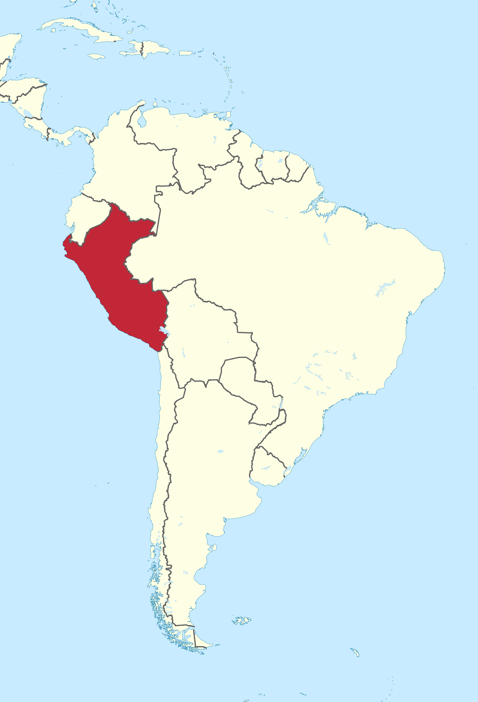
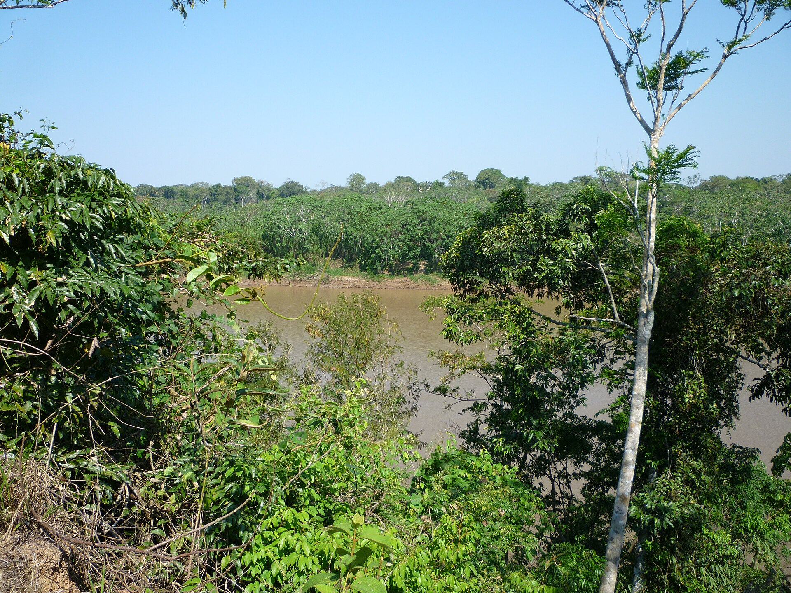

Costa
Faixa voltada ao Pacífico, com áreas áridas, vales agrícolas e cidades como Lima. Pesca e agricultura participam da alimentação local. A concentração de serviços convive com desigualdades urbanas.

Costa, Andes e Amazônia se encontram na história e no cotidiano peruano.
Nome oficial em espanhol: República del Perú. Um país no oeste da América do Sul, com litoral no Oceano Pacífico.
Faz fronteira com Equador, Colômbia, Brasil, Bolívia e Chile. Essa posição reúne diferentes paisagens, formas de transporte e modos de vida.
de habitantes, aproximadamente
Banco Mundial, população estimada de 2025: 34.576.665.Compare o mapa digital com o mapa artesanal e o quadro de informações da nossa mesa.

Costa, Andes/Serra (Sierra) e Amazônia/Selva têm diferenças de relevo, clima, alimentação, cultura, transporte e disponibilidade de serviços. Dentro de cada região também existem modos de vida e condições sociais diferentes.
Faixa voltada ao Pacífico, com áreas áridas, vales agrícolas e cidades como Lima. Pesca e agricultura participam da alimentação local. A concentração de serviços convive com desigualdades urbanas.

Sierra em espanhol: montanhas, vales e áreas altas de clima frio. Cultivos como quinoa e maca e tradições quéchuas e aimarás expressam parte dessa diversidade. Estradas de montanha podem dificultar viagens.

Florestas e rios no leste, de clima quente e úmido. Reúne diversos povos e saberes alimentares. Em algumas comunidades, barcos são essenciais para chegar às escolas e aos serviços de saúde.
Essas diferenças geográficas também influenciam a qualidade de vida. Comunidades rurais dos Andes e da Amazônia podem enfrentar maiores distâncias e dificuldades de transporte para acessar hospitais e outros serviços. Entenda essa relação.

A civilização Inca organizou caminhos, cidades e terraços agrícolas adaptados às montanhas. Seu legado aparece no patrimônio e em saberes que continuam sendo transmitidos.
O Peru também é indígena, amazônico, afroperuano e marcado por encontros culturais. As comunidades atuais têm identidades próprias, que não se resumem à história dos Incas.
Construído no século XV, o sítio Inca combina arquitetura de pedra, terraços agrícolas e um ambiente montanhoso extraordinário.

O conjunto mostra formas de planejar e construir em uma encosta dos Andes, na região de Cusco.
O Santuário Histórico de Machu Picchu foi inscrito na Lista do Patrimônio Mundial da UNESCO em 1983 por seus valores culturais e naturais.
A paisagem ajuda a visualizar como montanhas e distâncias podem dificultar deslocamentos. O monumento não causa desigualdade.
Você também pode observar uma representação de Machu Picchu em nossa mesa. Esse patrimônio é parte da história peruana; a cultura do país inclui muitos outros povos e tradições.